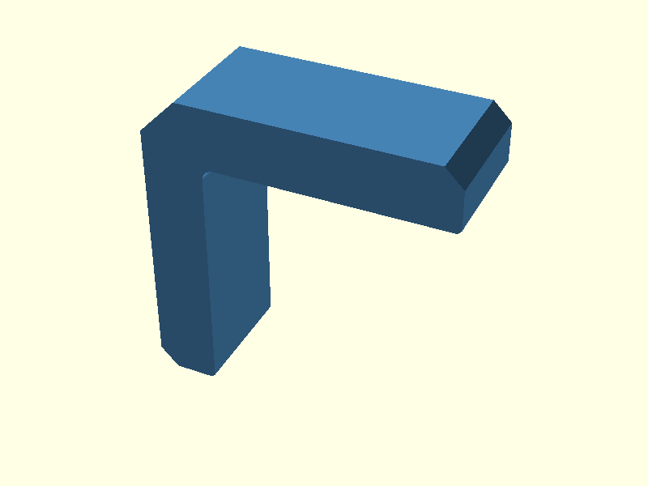
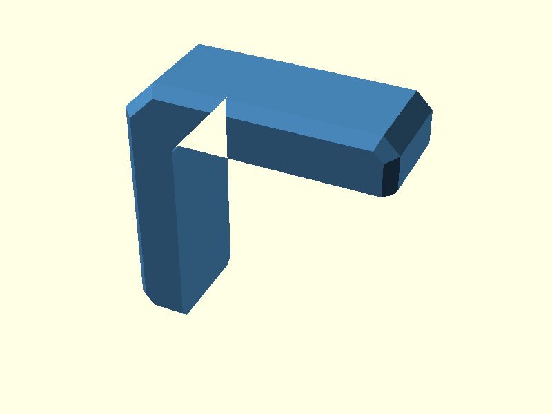
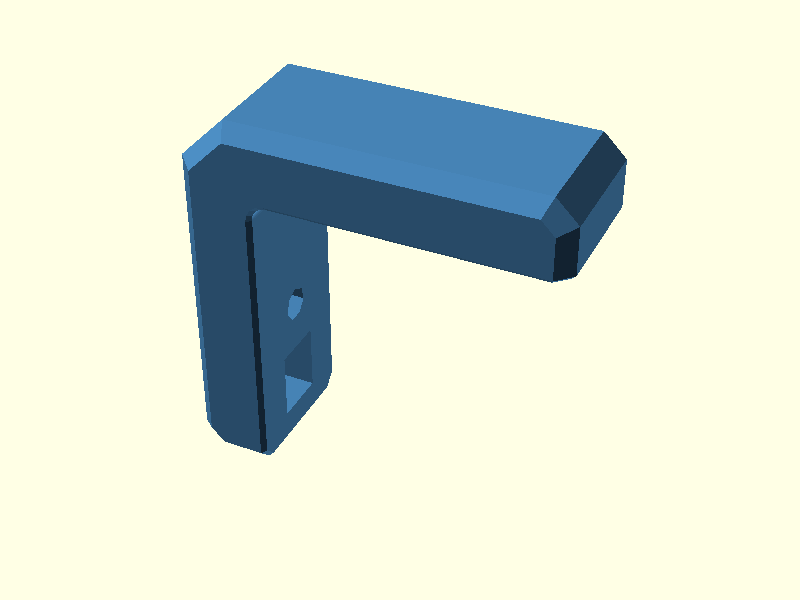
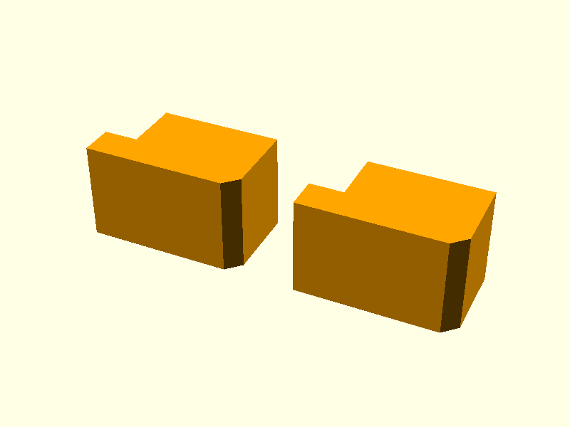
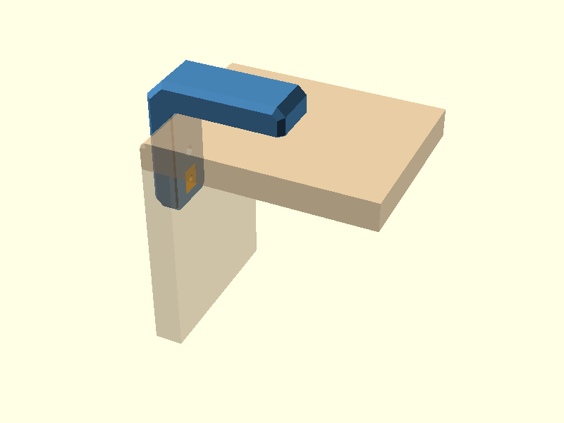
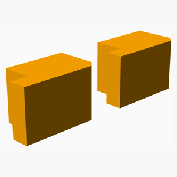
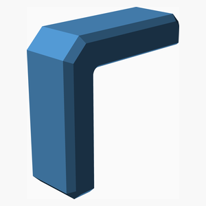
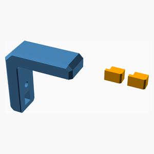

Outside-corner bracket for two 10 mm plywood panels. The original parametric design is in corner_bracket.scad. It has two captive-nut pockets accessible from the wood-facing surfaces and two removable plugs that conceal the access windows after assembly.
This is a work in progress. Test-fit the M4 fasteners, nuts, printed clearances, plywood corner relief and printed-part strength before use. All dimensions below are millimetres.
The separate design.scad uses the same CAD geometry. Select a stage in its Customizer to inspect the construction interactively. These six images are regenerated by CI directly from that source.
Start from a 2D L profile, round the inner corner and extrude to the
configured bracket width (W = 20). The arms are 40 mm long by default.

Apply a separate outer envelope to bevel the exposed side edges, arm ends and outside corner; keep the plywood contact faces flat.

Subtract the two M4 clearance holes, hidden nut pockets, and access windows. Nuts slide under the 3 mm retaining wall before fitting the windows' closing plugs.
Remove narrow 45-degree wedges along wood-facing edges to reduce elephant-foot interference. The rounded inside corner must also be matched by an appropriate radius on the plywood.

Each access window receives one small plug. The printing layout places the two plugs on their sides; each has a hooked tab for the retaining slot.

Show the bracket outside the plywood corner, with both plugs fitted. The plywood is a visual reference only, not part of the printable STL.

The CAD files below are the definitive geometry. The automatically generated bill of materials includes the printed bracket and one two-plug set. Plywood, bolts and nuts are not modeled BOM items.
| Main | TOTALS | |
|---|---|---|
| 3D printed parts | ||
| 1 | 1 | access_plugs.stl |
| 1 | 1 | corner_bracket.stl |
| 2 | 2 | Total 3D printed parts count |
| 1 x access_plugs.stl | 1 x corner_bracket.stl |
|---|---|
 |
 |

Printed bracket and the pair of access-window plugs displayed side by side. See the final design step above for their actual installed position.